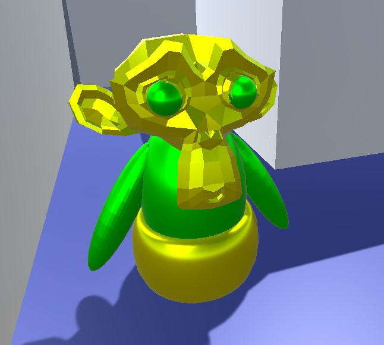
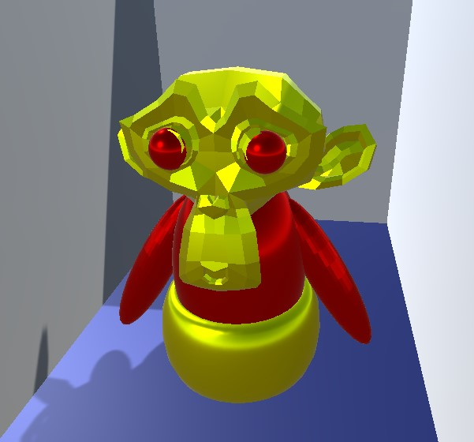

| Издатель: Антонов Алексей |
| Разработчик: Антонов Алексей |
| Год выхода: 2022 |
| Категория: Шутеры / Шутеры от первого лица / Для слабых ПК / Головоломка |
| Язык: English, Русский |
| ОС:Windows x64 |
| Оценка пользователей: 4.9 / 5.0 |
Игра разработана на межплатформенной среде разработки компьютерных игр Unity, с использованием 3D-моделей, изготовленных в Blender. Никаких сторонних приметивов использовано не было, полностью ручная работа!
Игрок появляется у точки Старт. И прямо за стенкой находится та самая точка Финиш, куда необходимо добраться вам. Вы имеете дело с самым настоящим лабиринтом, только теперь вы смотрите на него не сверху вниз, а вы находитель прямо в нём.  Да, путь вам предстоит не легкий, но и не совсем сложный. Дело в том, что на правильном пути к финишу вы будете наблюдать статуэтки залёного цвета. Вы можете перепрыгнуть их, а можете и убить - для этого в ваших руках имеется оружие. Прицела у него нет, но будьте уверены - снаряды летят прямо, не имея никаких разбросов. Да, лабиринт состоит отнюдь не из исключительно верного пути - если вы будете близки к тупику, то увидете на этот раз статуэтку красного цвета. Будьте внимательны и успехов в прохождении!